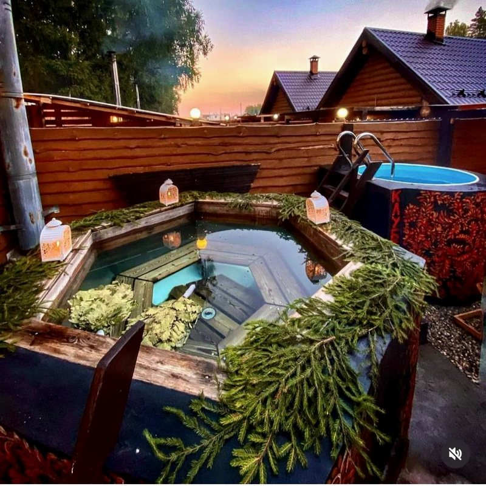

Русская баня на дровах
Отдельные срубы с дровяными печами, приватными двориками, холодными купелями и чанами на открытом огне. Парение с пармастером, веники и травяные программы.
- «Банная романтика»2 часа в банной избе, чан на костре, веники и травяной чай11 900 ₽
- «Свидание для двоих»Парение с пармастером и ужин на двоих в бане или домике23 900 ₽
- «Свидание по-Барски»3 часа, чан со свечами и пихтой, два парения, медово-солевой пилинг44 900 ₽
Цены программ в будни, проживание отдельно · Банная изба от 3 000 ₽ в час